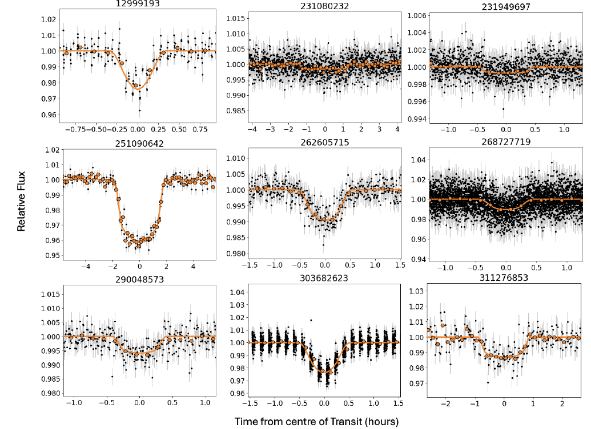
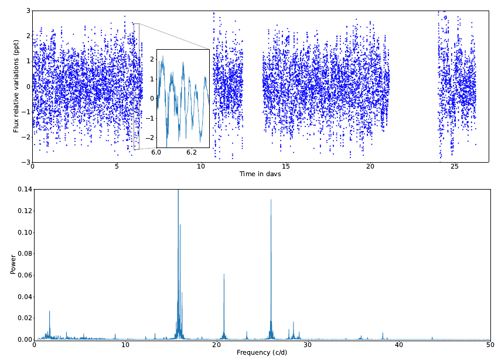
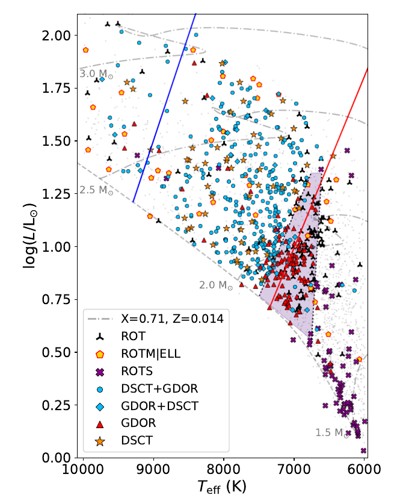

Welcome TESS followers to our latest news bulletin!
This week, we are looking at three recent papers from the archive. Enjoy!
9 new M Dwarf Planet Candidates from TESS Including 5 Gas Giants (Eschen & Kunimoto 2024) :
The relatively small size of M dwarfs makes them well-suited targets for the detection of transiting planets. Combined with their comparatively lower luminosity, these stars provide an excellent opportunity to detect short-period planets in the habitable zone. Eschen & Kunimoto (2024) capitalize on the Full-Frame Image data from TESS to pursue a new search for transiting planets around M-dwarfs. The authors utilized the QLP photometry from Sectors 1-63 and the BLS algorithm to search for transits in the lightcurves of 107,303 M-dwarfs brighter than T = 13.5 mag. Eschen & Kunimoto (2024) detrend the data with the wotan code, using a detrending width to 0.75 days, set the minimum period searched to 0.5 days and the maximum period searched to either half the longest available observed baseline or 100 days, and require the detection of at least 3 transits. To vet and validate the potential signals, the authors use established procedures that include tests for e.g. eclipsing binary stars, stellar variability, systematic effects, transit asymmetry, unphysical orbital configurations, false positive probability, manual triage. Eschen & Kunimoto (2024) note that the vast majority of the 13,642 detected transit-like signals were ruled as false positives. From the remaining signals, the authors recovered 85 known TESS Objects of Interest and found 9 new planet candidates. The latter have orbital periods in the range of 0.6-20 days, and sizes in the range of 2-11 Earth radii. Five of the new candidates are likely gas giants, one of which has a significant orbital eccentricity (~0.47) that hints at potential high-eccentricity orbital migration origin. Thanks to TESS, Eschen & Kunimoto (2024) were able to find new 9 planet candidates around M-dwarfs, including 5 short-period potential gas giants that represent a relatively rare type of planets.
An improved asteroseismic age of the rapid rotator Altair from TESS data (Rieutord et al. 2024) :
With a visual magnitude of about 0.8 mag, Altair is one of the brightest stars in the sky and, at a distance of about 5 pc, also one of the nearest. It is an A-type main-sequence star exhibiting delta Scuti oscillations, has an obliquity of about 50 degrees and a true equatorial velocity that is nearly 75% of the estimated breakup velocity (~300 km/sec vs 400 km/sec). Rieutord et al. (2024) present a new astreroseismic analysis of Altair aimed at better understanding the detailed characteristics of the star. TESS observed the target in Sector 54 at 2-min cadence. With a TESS magnitude of T = 0.58 mag, Altair poses a significant saturation challenge when analyzing the data – the light from the star spills over hundreds of pixels. The authors overcome this challenge with the established technique of halo photometry, which enables the recovery of saturated light from nearby pixels minimizing the corresponding flux variations. Rieutord et al. (2024) performed a Lomb-Scargle analysis of the extracted photometry, derived the corresponding power spectrum, and detected 34 distinct frequencies. Twenty two of these are new detections while the remaining twelve are known from previous work. Based on model predictions, the authors associate three of the known frequencies (23.2791, 25.95061, 28.4064 cycles/day) and seven of the new detections with the ten axisymmetric modes. Rieutord et al. (2024) combine three of these ten frequencies with previous estimates of Altair’s mass to determine its radius and age. The authors find that the hydrogen mass fraction in the core is Xcore /Xini ~ 0.97, with Xini = 0.74 and, using a 1-D MESA and 2-D ESTER models, estimate an age of 88+/-10 Myrs. Capitalizing on TESS observations of the bright star Altair, Rieutord et al. (2024) were able to obtain new asteroseismological constraints on the stellar parameters, and argue that still more observations are needed to understand the origin of the highest amplitude oscillations detected in the lightcurve at 15.76789 cycles/day.
Periodic variable A-F spectral type stars in the southern TESS continuous viewing zone (Skarka & Henzl 2024) :
Stellar variability is a complex phenomenon that covers a wide range of stellar types, amplitudes, modes and timescales, classification types, etc. Understanding the various effects and underlying causes is further complicated when multiple mechanisms are operating simultaneously, such as in A-F type stars. Skarka & Henzl (2024) present a study of variable A-F stars in the southern continuous viewing zone of TESS. The authors investigate a sample of 2302 stars that are listed in the Simbad database, have effective temperatures between 6,000 and 10,000 K, and are brighter than V = 10 mag. TESS observed the targets in Sectors 1-13 and 27-39, and the authors used the corresponding SPOC (short- and long-cadence) and QLP (long-cadence) lightcurves, the latter only when the former is not available. To classify the targets, Skarka & Henzl (2024) analyzed the corresponding frequency spectra and utilized an established scheme based on three general categories of stellar variables – eclipsing binaries, rotators, pulsators, each including several subcategories. The authors identified a total of 1171 variable stars (51% of their target sample) and manually classified ~67% of these as one of several pre-defined categories including delta Sct and gamma Dor pulsators and hybrid pulsators, rotational variables, eclipsing binaries, etc. Skarka & Henzl (2024) were unable to determine the variability type for 372 targets, and ruled out dozens of false positives caused by contamination from nearby variable stars. The authors classified ~43% of all variable stars (503 out of 1171) as pulsators, noting that the fraction is ~22% lower than that obtained from a similar sample in the northern continuous viewing zone of TESS. The authors also confirmed previous findings highlighting that variability classification is a complex process that requires comprehensive consideration, and found large discrepancies in the classifications provided by catalogs of variable stars. Finally, Skarka & Henzl (2024) argue that the variable star classification enabled by TESS is superior to that of other photometric surveys.

Fig. 1: Taken from Eschen & Kunimoto (2024). Phase-fold TESS lightcurves for 9 new transiting planet candidates detected in Full-Frame-Image data from Sectors 1-63. Black symbols represent the TESS photometry while orange lines and symbols represent the respective best-fit transit models.

Fig. 2: Taken from Rieutord et al. (2024). Upper panel: 2-min cadence TESS light curve of the highly-saturated (T = 0.58 mag) star Altair, extracted via the halo photometry technique. Lower panel: corresponding power spectrum in units of cycles/day.

Fig. 3: Taken from Skarka et al. (2024). Hertzsprung-Russell diagram of variable stars observed by TESS and classified by Skarka & Henzl (2024). The dashed line represents the zero-age main sequence, the dot-dashed lines represent evolutionary tracks (as labeled on the figure), and the blue/red lines show the empirical boundaries of the delta Scuti instability steip. The variable types are listed in the legend; the small gray symbols represent stars marked as non-variable.